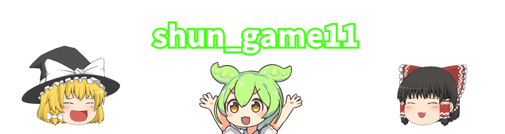

shun_game11について
shun_game11は主にyoutubeとdiscordで活動しているゆっくり実況者です。詳しくはここをクリック
shun_game11への連絡方法
・メール : メールアドレス:未定
・X(旧Twitter)でのDM : shun_game11のX(旧Twitter)
・discordでのDM : shun_game11のdiscordのID: "shun_game11"